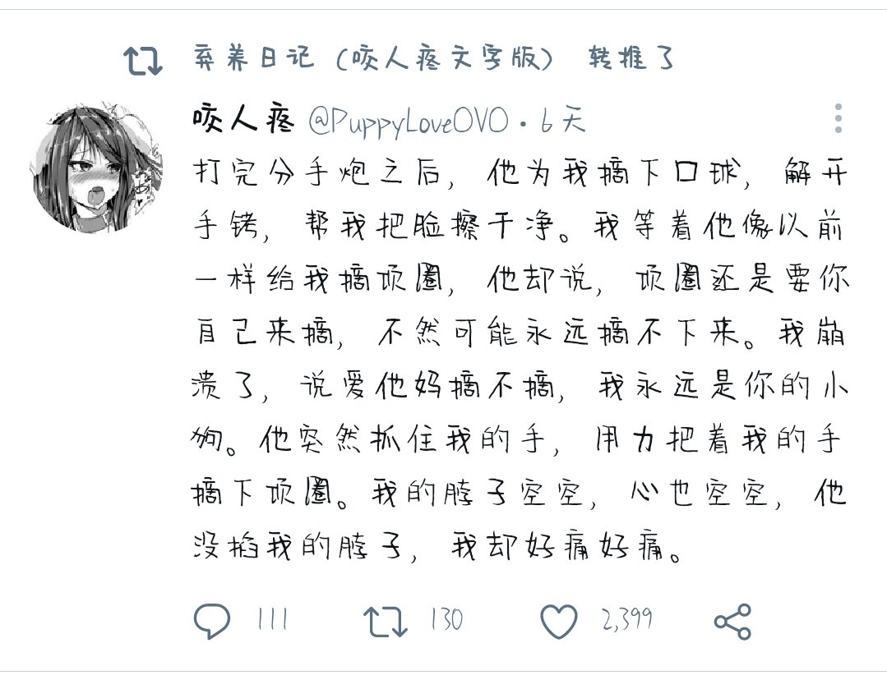
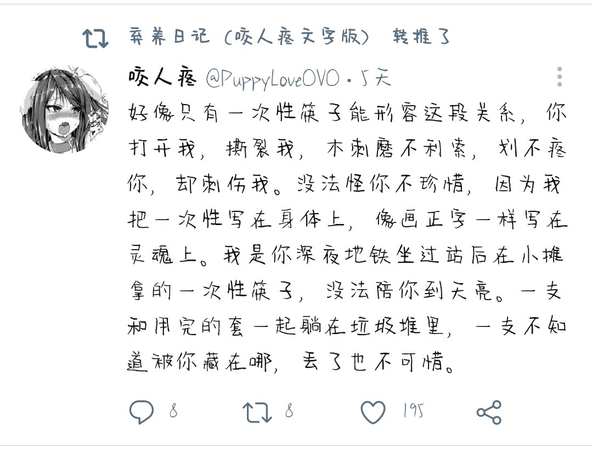
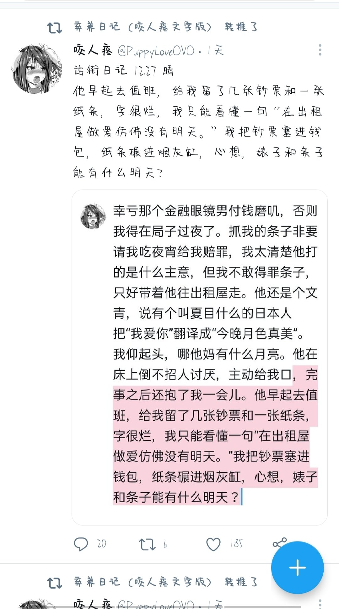

# 咬人疼
来源推特



# 圣战
来源知乎
知乎跟跟他妈圣战一样，从来没有一个地方如同这里一般，看着双方你来我往的回答，都给我看爽了，此起彼伏如同海潮般涌动的澎湃的生命力，刀与火狰狞的碰撞，让银河燃烧！
# 大风天
来源抖音
大雪或台风下的兴奋
源于极端天气对你循规蹈矩生活的打破
# 大巧不工
来源贴吧用户：我很爱你的
# 段一
我爸妈离婚的那个暑假，我玩了一个暑假的魔兽争霸和英雄无敌，吧里有玩英雄无敌的嘛，家里正常没人，我爹饭点会回来送饭，然后就急忙的去工作了，那时候睁眼不知道干啥，闭眼有总是睡不着，看着空荡荡的屋子，不知所措，总有种说不出的感觉，那种感觉不热烈，没有悲伤那么痛苦，没有愤怒那么强烈，不喜不悲的，就是感觉心里起了一层雾，一层很平淡的雾，雾不大，但是足以遮住太阳，却任由风雨袭来，后来，我才知道，那层雾叫孤独
# 段二
人就是这样，想来想去，犹豫来犹豫去，觉得自己还没有准备好，勇气没有攒够，其实只要迈出去第一步，你就会发现一切早就已经准备好了
# 段三
人啊，就是这样，花大把时间迷茫，在几个瞬间成长
# 糖果
来源知乎
没有怎么刷完这位 up 的视频，但是我也曾经在西雅图工作过几年，租住的地方附近的街道流浪汉也很多，由于大部分人精神都不太正常，我也不大敢接近
但是至今我也记得一个场景，大概是 21 年的圣诞节晚上，我出去买东西，路过一名流浪汉，不停地捡地上的东西往嘴里塞，但是地上其实什么也没有，只有商店霓虹灯撒下来不停变换的光斑，仿佛是一颗颗鲜艳的糖果。
# galgame 与现实
来源 b 站
bro 为什么在 galgame 里攻无不克，现实我却又屡屡碰壁呢？因为 galgame 给你开了四个外挂
1. 付出一定会有回报
2. 真心必能换得真心
3. 感情总是纯洁真挚
4. 爱不会随时间流逝
# 出头鸟
来源抖音
我深切地明白什么是枪打出头鸟，
但想要掀起一场为了我们自己的战争，就必须有一只出头的鸟
# AI 科比下的评论
来源抖音
说不定 ai 只是一个转录机，你搜什么，他就去平行世界找什么，拍照给你看
# 呼吸，好开心
来源 b 站
我们吞咽了太多意义，其实生命只需要呼吸
# 南北宋
来源 Deepseek
什么是北宋
—— 华胥梦短，汴梁灯寒。靖康雪覆山河烬，北望烟尘老雕鞍。
什么是南宋
—— 残荷听雨，临安醉客画中眠。半壁江山瘦成词，终是铁蹄惊碎偏安梦。